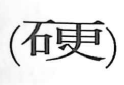

硬

Kun: katai | On: kou
hard ・ hardness ・ unyielding
Explanation
硬 is a phono-semantic character: 石, “stone,” provides the sense of hardness, while 更 functions as the phonetic element with the reading kou. In old forms, 更 depicts the act of striking and altering a pedestal-like frame (丙). Joined with stone, the graph conveys something that does not easily change—hard. From this core meaning it comes to denote physical hardness or solidity, and by extension a firm, unbending spirit, as reflected in compounds such as 硬漢 and 硬骨.